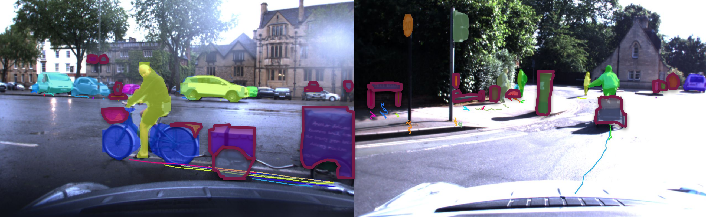

Aljoša Ošep Dynamic Vision and Learning Group Technical University of Munich Email: aljosa dot osep at tum dot de
Through object detection and tracking, autonomous systems become aware of their whereabouts and determine their future motion. The leading vision-based paradigms for multi-object tracking [8, 3] heavily relies on robust object detectors [35, 10, 34], which i) can currently detect only object classes that are observed frequently and ii) are trained using huge quantities of carefully labeled samples.
On the other hand, mobile robots experience a continuous stream of sensory data and need to operate in a physical 3D world. Furthermore, our world is inherently open-set [9, 5] and populated with unknown dynamic objects (Fig. 1). It is therefore crucial for future mobile robots to continuously model and learn from previously unseen objects – especially if they can move and pose a safety hazard. Motivated by these challenges, my main research drive is to enable future mobile robots to adapt to novel environments and to learn about objects and their behavioral patterns automatically, without exhaustive human supervision.
These goals are closely related to tasks such as representation learning from video [39], weakly-supervised detector learning [18], zero-shot object recognition and detection [40, 2], object class discovery [23, 17, 17, 11, 11, 12] and learning object detectors from dominant video tubes [33]. The main difference to the aforementioned is that we are learning to segment, track, and recognize objects from a raw, continuous stream of sensory data, without any form of manual pre-processing. In our scenarios, objects of interest are not pre-localized, and we do not assume that videos contain a dominant, salient moving region – objects are interacting with each other and are continuously entering and leaving the sensing area.
At the core of robot perception is the ability to track and analyze the moving objects online. Via object tracking, mobile robots have the ability to foresee potential collisions and react to possibly harmful situations in time.
 Fig. 1. The capability to perceive and react to unknown (dynamic) objects (marked a with red border) is vital in mobile robotics scenarios.
Multi-Object Tracking. In [25], we proposed a method that lifts the detection-based multi-object tracking paradigm to 3D using an inexpensive stereo setup and that can detect, track, and localize surrounding objects in 3D space. Our system combines 2D object detections and stereo-based depth measurements to improve image-based tracking and, importantly, 3D localization. Our experiments show that the proposed method was on-par with state-of-the-art image-based tracking approaches and can localize objects in 3D robustly.
While the focus of that method was on online multi-object tracking and 3D object trajectory reconstruction, the recent trends in vision-based multi-object tracking are heading towards leveraging the representational power of deep learning. One of the major challenges in end-to-end learning of multi-object tracking is the lack of differentiable loss functions that directly correlate with established MOT evaluation measures [4]. This stems from the fact that tracking evaluation necessitates establishing a matching between ground truth objects and track prediction – typically performed using the Hungarian algorithm, which contains non-differentiable operations. To this end, we proposed a trainable matching layer, inspired by Hungarian algorithm [15], that allows to back-propagate gradients to the tracking network and novel loss functions that directly correlate to established tracking evaluation measures [4].
Category-Agnostic Multi-Object Tracking and Video Object Mining. The aforementioned methods follow the common paradigm for vision-based multi-object tracking, that extract object evidence from images using a pre-trained object detector, e.g., [35, 10, 34]. It is important to study multi-object tracking in a well-controlled, closed-set environment and dis-entangle object tracking performance from object recognition accuracy. However, obtaining reliable detectors for every possible object class will clearly not be feasible, as we can expect the frequency of object category observations to follow a power-law distribution with some object categories occurring very frequently and the vast majority being increasingly rare. To this end, we investigated vision-based generic multi-object tracking in the open-set world, where the set of object classes that need to be tracked and detected is unbounded, and we proposed CAMOT, a vision-based, Category-Agnostic Multi-Object Tracker [26]. This method leverages recent developments in learning-based object proposal generation and estimates trajectories of arbitrary objects. This has been largely inspired by the success of the early tracking-before-detection paradigm in the context of LiDAR-based multi-object tracking for autonomous driving [37, 24]; however, vision-based object instance segmentation of arbitrary objects is a very challenging and open research problem [31, 30], as we cannot rely on the reliable spatial proximity cues for grouping.
At the core of our approach is an efficient mask-based representation of tracked objects that can be simply lifted to 3D space in the presence of depth estimates (see Fig. 2). This allows for a robust data association based on an estimated 3D motion vector and pixel-precise representation of the object tracks. CAMOT achieves comparable performance to detection-based methods for the known object classes in the camera near-range and can track a large variety of other objects. One of the critical components of this method is precise, segmentation-mask based data association – we investigated the impact of such representation for tracking in the follow-up work [38] and successfully applied this paradigm to the task of (unsupervised) video-object segmentation [20, 21]. In [1], we further demonstrate that by tracking objects in a category-agnostic manner by grouping spatio-temporal volumes, we can generalize across different tasks and datasets related to pixel-precise object tracking [38, 6, 41, 32].
Beyond online tracking, we can use such an approach to fuse information across time from different views in an offline fashion and build a 3D semantic map of the world as a composition of dynamic objects. Such a fused map can be used to mine and discover unknown objects and their respective trajectories. In this line of work, we have proposed 4D Generic Video Object Proposals (4D-GVT) [29] for offline video object proposal generation, designed to mine objects from a large corpus of video data. 4D-GVT unifies two separate networks used in CAMOT for proposal generation and track classification. We have demonstrated that we can compensate for the absence of training data for generating video object proposals by combining learning-based methods and prior knowledge about parallax, motion, and appearance consistency in a probabilistic framework. 4D-GVT achieves remarkable generalization to unseen object classes. In particular, we obtain a better recall by training our method on the COCO dataset [19] using information about 80 object classes compared to the large-scale object instance segmentation method by [13], which trains jointly on COCO and VisualGenome [14] datasets, containing labels for over 3,000 object classes. Additionally, in contrast to [13], our approach precisely tracks each candidate object in 3D space.
Video Object Discovery. In [28], we present a large-scale study for object mining and category discovery and show that our CAMOT [26] can be used for large-scale video object mining and discovery in automotive scenarios. In total, we mined roughly 10 hours of video data (from the Oxford RobotCar dataset [22]) consisting of more than 560,000 frames. From this data, we extracted more than 360,000 object tracks. We used these tracks to evaluate the suitability of different feature representations and clustering strategies for object discovery. We published preliminary results on using these discovered clusters for self-supervised object detection in [27].
Simultaneous Multi-Object Tracking, Localization, and Mapping. I am very thrilled by the future potential of my research area. In the near term, I plan to combine our trackers with methods for simultaneous localization and mapping (SLAM). Such fusion can benefit both fields of research. Multi-object tracking (MOT) could benefit from temporal integration of depth measurements and improve robustness to sensory failures (e.g., extreme lighting and weather conditions). Existing vision-based SLAM methods could, via tracking, explicitly account for moving objects and estimate precisely the full 3D shape of tracked objects to improve 3D tracking precision. In addition to moving objects, our methods can track and localize static landmarks such as traffic signs, trees, road signs, markers, cones, etc., which could be used to improve the robustness of existing SLAM pipelines by incorporating object-level cues.
Self-Supervised Object Detector Learning. I am planning to continue my research in the area of vision-based object discovery and self-supervised detector learning. By mining large video collections, we demonstrated [28] that we can group semantically similar objects and discover novel object classes via clustering. These clusters could then be used as a basis for learning new detectors without human supervision.
Motion Prediction and Shape Completion. Our 4D video-object proposals [29] could be used for several tasks. These proposals do not only localize possible objects but also provide 3D localization of object trajectories and capture the evolution of 3D shape over time. I plan to investigate whether the estimated trajectories can be as a supervisory signal for predicting future motion [16] and 3D shape-completion [36].
Cross-modality Video Object Mining. Thanks to new automotive datasets [7], we believe there is significant potential in extending our methods towards leveraging different sensor modalities (cameras, LiDAR, RADAR) to mine novel object tracks from recently introduced large-scale automotive datasets.
Acknowledgements: I would like to thank all my collaborators, especially my PhD advisor Bastian Leibe and PostDoc advisor Laura Leal-Taixé.
References
[1] Ali Athar, Sabarinath Mahadevan, Aljoša Ošep, Laura Leal-Taixé, and Bastian Leibe. Stem-seg: Spatio-temporal embeddings for instance segmentation in videos. arXiv arXiv:2003.08429, 2020.
[2] Ankan Bansal, Karan Sikka, Gaurav Sharma, Rama Chellappa, and Ajay Divakaran. Zero-shot object detection. In ECCV, 2018.
[3] Philipp Bergmann, Tim Meinhardt, and Laura Leal-Taixé. Tracking without bells and whistles. In ICCV, 2019.
[4] Keni Bernardin and Rainer Stiefelhagen. Evaluating multiple object tracking performance: The clear mot metrics. JVIP, 2008:1:1–1:10, 2008.
[5] TE Boult, S Cruz, AR Dhamija, M Gunther, J Henrydoss, and WJ Scheirer. Learning and the unknown: Surveying steps toward open world recognition. In AAAI, 2019.
[6] Sergi Caelles, Jordi Pont-Tuset, Federico Perazzi, Alberto Montes, Kevis-Kokitsi Maninis, and Luc Van Gool. The 2019 DAVIS challenge on VOS: unsupervised multi-object segmentation. arXiv arXiv:1905.00737, 2019.
[7] Holger Caesar, Varun Bankiti, Alex H. Lang, Sourabh Vora, Venice Erin Liong, Qiang Xu, Anush Krishnan, Yu Pan, Giancarlo Baldan, and Oscar Beijbom. nuScenes: A multimodal dataset for autonomous driving. arXiv preprint arXiv:1903.11027, 2019.
[8] Wongun Choi. Near-online multi-target tracking with aggregated local flow descriptor. In ICCV, 2015.
[9] Chuanxing Geng, Sheng-jun Huang, and Songcan Chen. Recent advances in open set recognition: A survey. PAMI, 2020.
[10] Kaiming He, Georgia Gkioxari, Piotr Dollár, and Ross Girshick. Mask R-CNN. In ICCV, 2017.
[11] Yen-Chang Hsu, Zhaoyang Lv, and Zsolt Kira. Deep image category discovery using a transferred similarity function. arXiv preprint arXiv:1612.01253, 2016.
[12] Yen-Chang Hsu, Zhaoyang Lv, and Zsolt Kira. Learning to cluster in order to transfer across domains and tasks. In ICLR, 2018.
[13] Ronghang Hu, Piotr Dollár, Kaiming He, Trevor Darrell, and Ross Girshick. Learning to Segment Every Thing. In CVPR, 2018.
[14] Ranjay Krishna, Yuke Zhu, Oliver Groth, Justin Johnson, Kenji Hata, Joshua Kravitz, Stephanie Chen, Yannis Kalantidis, Li-Jia Li, David A Shamma, Michael Bernstein, and Li Fei-Fei. Visual genome: Connecting language and vision using crowdsourced dense image annotations. arXiv preprint arXiv:1602.07332, 2016.
[15] H. W. Kuhn and Bryn Yaw. The hungarian method for the assignment problem. Naval Res. Logist. Quart, pages 83–97, 1955.
[16] Namhoon Lee, Wongun Choi, Paul Vernaza, Christopher Bongsoo Choy, Philip H. S. Torr, and Manmohan Krishna Chandraker. Desire: Distant future prediction in dynamic scenes with interacting agents. CVPR, 2017.
[17] Yong Jae Lee and Kristen Grauman. Learning the easy things first: Self-paced visual category discovery. In CVPR, 2011.
[18] Xiaodan Liang, Si Liu, Yunchao Wei, Luoqi Liu, Liang Lin, and Shuicheng Yan. Towards computational baby learning: A weakly-supervised approach for object detection. In ICCV, 2015.
[19] Tsung-Yi Lin, Michael Maire, Serge Belongie, James Hays, Pietro Perona, Deva Ramanan, Piotr Dollár, and C. Lawrence Zitnick. Microsoft COCO: Common objects in context. In ECCV, 2014.
[20] Jonathon Luiten, Paul Voigtlaender, and Bastian Leibe. Premvos: Proposal-generation, refinement and merging for video object segmentation. In ACCV, 2018.
[21] Jonathon Luiten, Idil Esen Zulfikar Zulfikar, and Bastian Leibe. Unovost: Unsupervised offline video object segmentation and tracking. In WACV, 2020.
[22] Will Maddern, Geoff Pascoe, Chris Linegar, and Paul Newman. 1 year, 1000km: The Oxford RobotCar dataset. IJRR, 36(1):3–15, 2017.
[23] Frank Moosmann and Miro Sauerland. Unsupervised discovery of object classes in 3d outdoor scenarios. In ICCV Workshops, 2011.
[24] Frank Moosmann and Christoph Stiller. Joint self-localization and tracking of generic objects in 3d range data. In ICRA, 2013.
[25] Aljoša Ošep, Wolfgang Mehner, Markus Mathias, and Bastian Leibe. Combined image- and world-space tracking in traffic scenes. In ICRA, 2017.
[26] Aljoša Ošep, Wolfgang Mehner, Paul Voigtlaender, and Bastian Leibe. Track, then decide: Category-agnostic vision-based multi-object tracking. In ICRA, 2018.
[27] Aljoša Ošep, Paul Voigtlaender, Jonathon Luiten, Mark Weber, and Bastian Leibe. Towards large-scale video object mining. ECCV 2018 Workshop on Interactive and Adaptive Learning in an Open World, 2018.
[28] Aljoša Ošep, Paul Voigtlaender, Jonathon Luiten, Stefan Breuers, and Bastian Leibe. Large-scale object mining for object discovery from unlabeled video. In ICRA, 2019.
[29] Aljoša Ošep, Paul Voigtlaender, Jonathon Luiten, Mark Weber, and Bastian Leibe. 4d generic video object proposals. In ICRA, 2020.
[30] Trung Pham, Vijay B. G. Kumar, Thanh-Toan Do, Gustavo Carneiro, and Ian Reid. Bayesian semantic instance segmentation in open set world. In ECCV, 2018.
[31] P.H.O. Pinheiro, T.-Y. Lin, R. Collobert, and P. Dollár. Learning to refine object segments. In ECCV, 2016.
[32] J. Pont-Tuset, F. Perazzi, S. Caelles, P. Arbeláez, A. Sorkine-Hornung, and L. Van Gool. The 2017 DAVIS challenge on video object segmentation. arXiv preprint arXiv:1704.00675, 2017.
[33] Alessandro Prest, Christian Leistner, Javier Civera, Cordelia Schmid, and Vittorio Ferrari. Learning object class detectors from weakly annotated video. In CVPR, 2012.
[34] Joseph Redmon, Santosh Divvala, Ross Girshick, and Ali Farhadi. You only look once: Unified, real-time object detection. In CVPR, 2016.
[35] Shaoqing Ren, Kaiming He, Ross Girshick, and Jian Sun. Faster R-CNN: Towards real-time object detection with region proposal networks. In NIPS, 2015.
[36] David Stutz and Andreas Geiger. Learning 3d shape completion from laser scan data with weak supervision. In CVPR, 2018.
[37] Alex Teichman and Sebastian Thrun. Tracking-based semi-supervised learning. IJRR, 31(7):804–818, 2012.
[38] Paul Voigtlaender, Michael Krause, Aljoša Ošep, Jonathon Luiten, B.B.G Sekar, Andreas Geiger, and Bastian Leibe. MOTS: Multi-object tracking and segmentation. In CVPR, 2019.
[39] Xiaolong Wang and Abhinav Gupta. Unsupervised learning of visual representations using videos. In ICCV, 2015.
[40] Yongqin Xian, Christoph H. Lampert, Bernt Schiele, and Zeynep Akata. Zero-shot learning - a comprehensive evaluation of the good, the bad and the ugly. PAMI, 2018.
[41] Linjie Yang, Yuchen Fan, and Ning Xu. Video instance segmentation. In ICCV, 2019.